Survival Systems
28th Bienal de Pontevedra, 2004. Curated by Miguel von Hafe Pérez and David G. Torres
Survival Systems – Urban Action Catalog 2003/2004 is a series of large-scale drawings – a fictional catalog of conceptual products for outdoor activities. This work addresses the idea that our interaction with nature is mediated by objects that exploit our need for safety and comfort. Ten drawings, 175x107 cm (69x42 in.) each, watercolor and graphite (text) on Arches paper.
A catalog of equipment for the body, it is presented as the pages of an enlarged book. The scale relationship between the viewer and each sheet of paper subverts the usual relationship between body and book; the book is a unique, handmade object, running counter to the function of a catalog printed in large runs for free distribution.
The work was made in the aftermath of the terrorist attacks of September 11, 2001 in New York. It grew in a studio overlooking Ground Zero, during a six-month residency run by the Lower Manhattan Cultural Council. Kits for outdoor activities such as camping or extreme sports had inspired earlier projects, through collected catalogs and advertising centered on the consumption and sale of comfort. In the traumatic climate of those years, the motif shifted from comfort to fear. New catalogs, shops in Lower Manhattan and websites sold anti-terrorism protective equipment. Masks and suits against biochemical attack, parachute kits for people working in skyscrapers, freeze-dried food, emergency tents and shelters offered a sense of security to a society invaded and manipulated by fear.
The drawings are made in watercolor; the text, drawn from and adapted from existing catalogs, is traced by transfer and filled in with graphite.
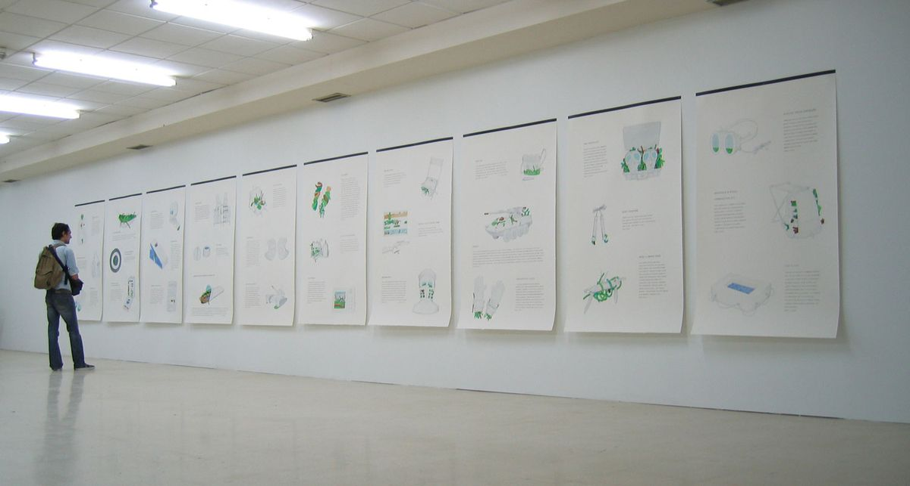
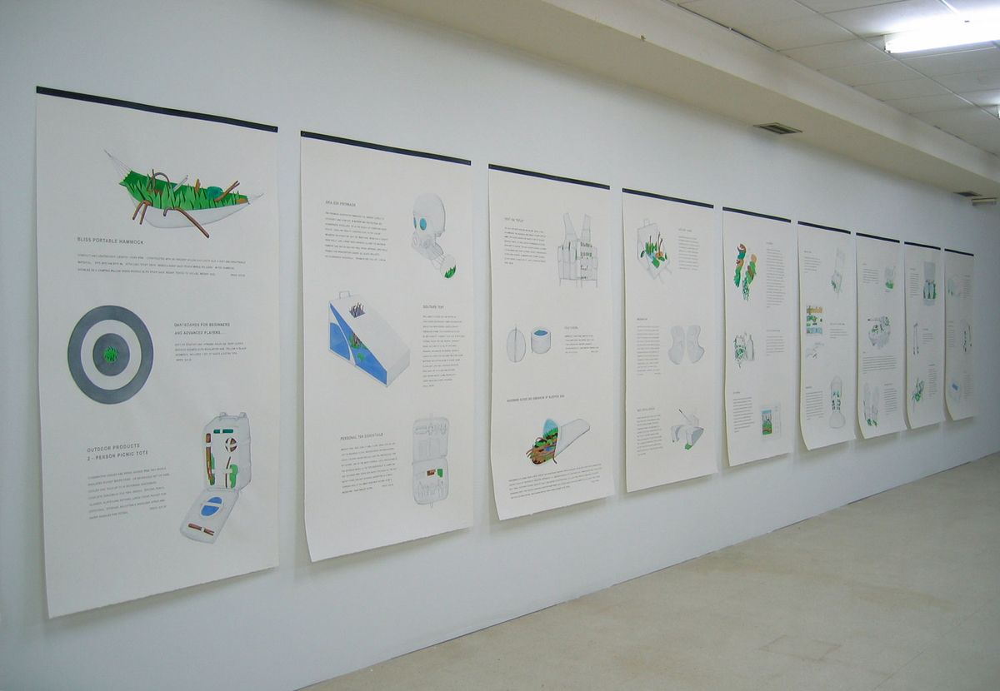
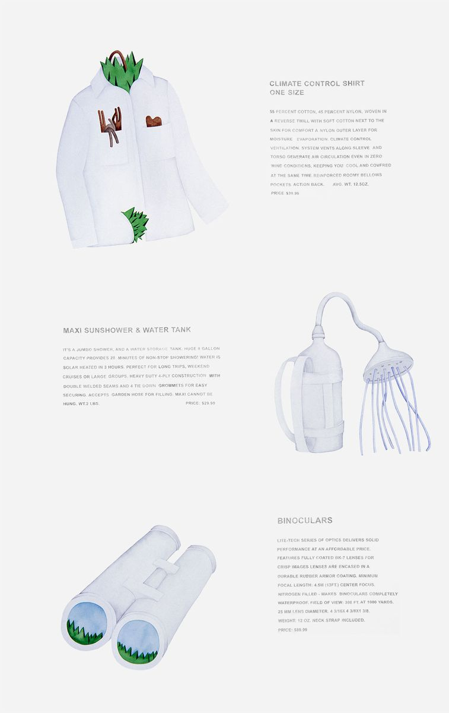
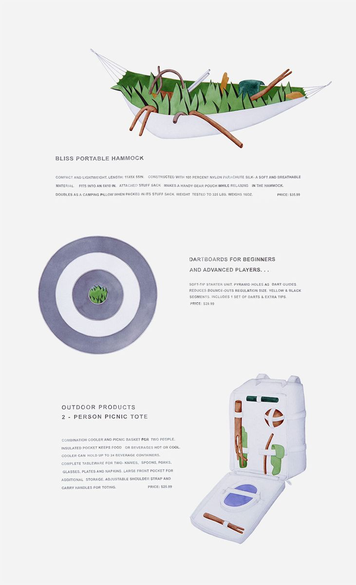
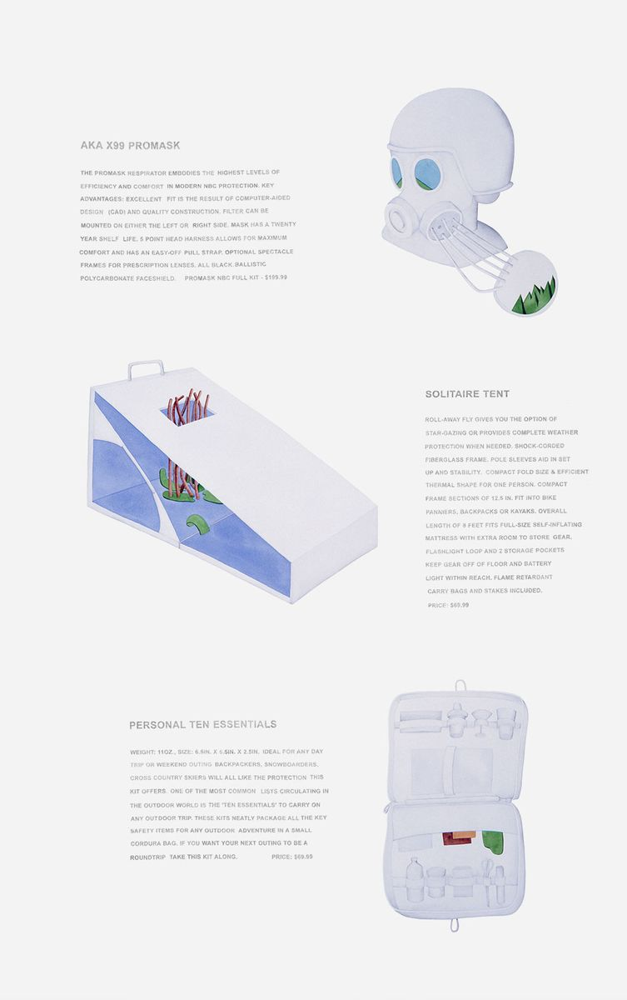
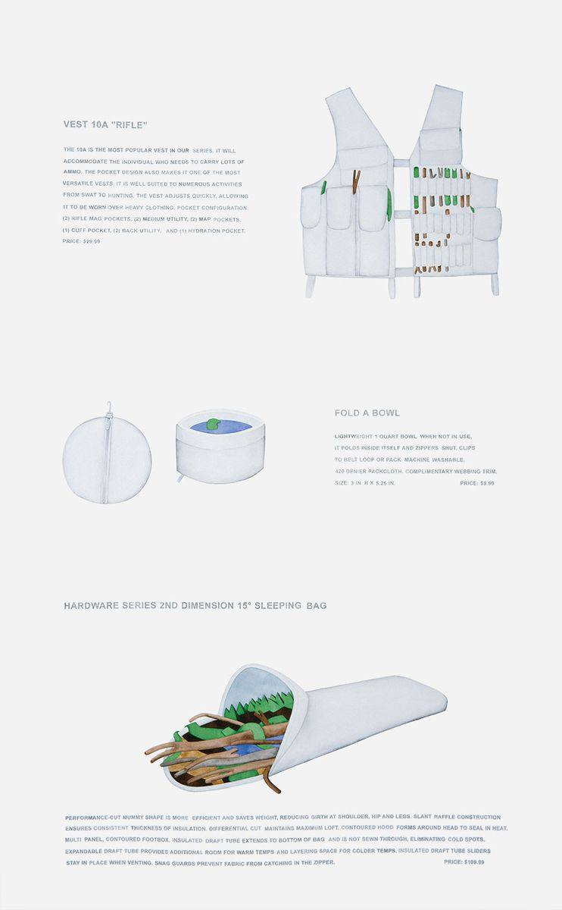
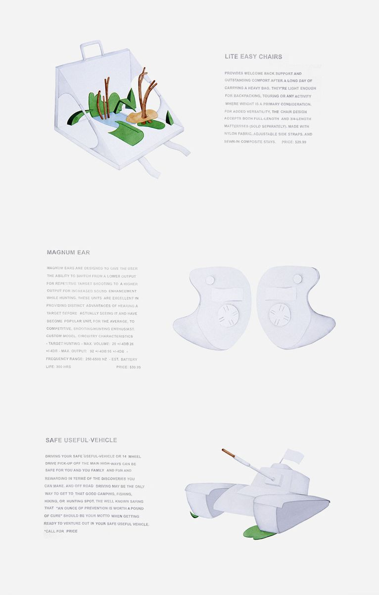
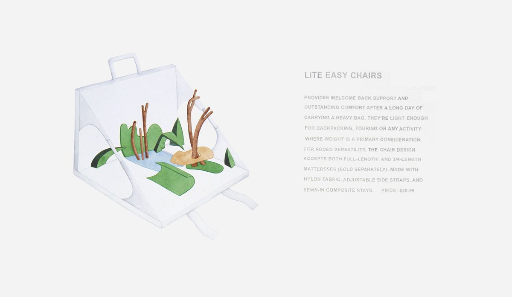
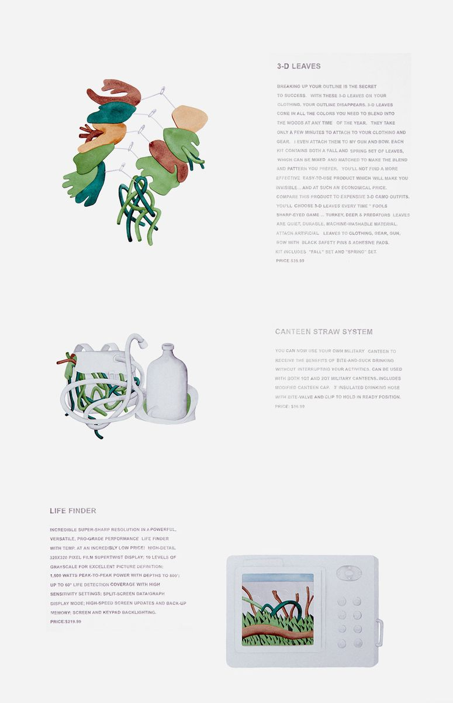
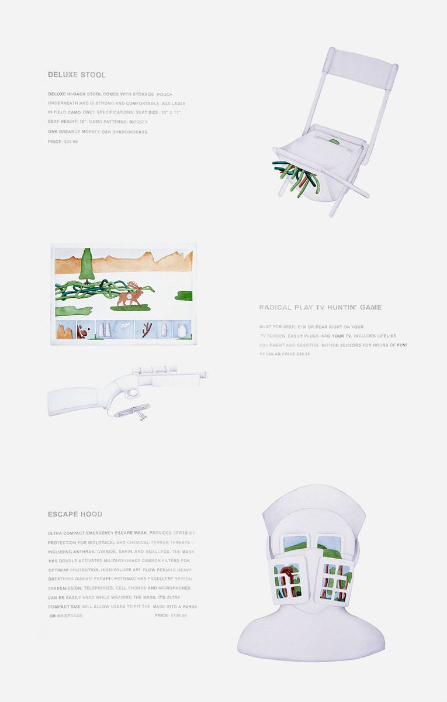
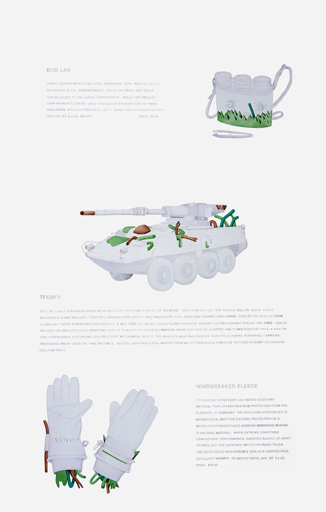
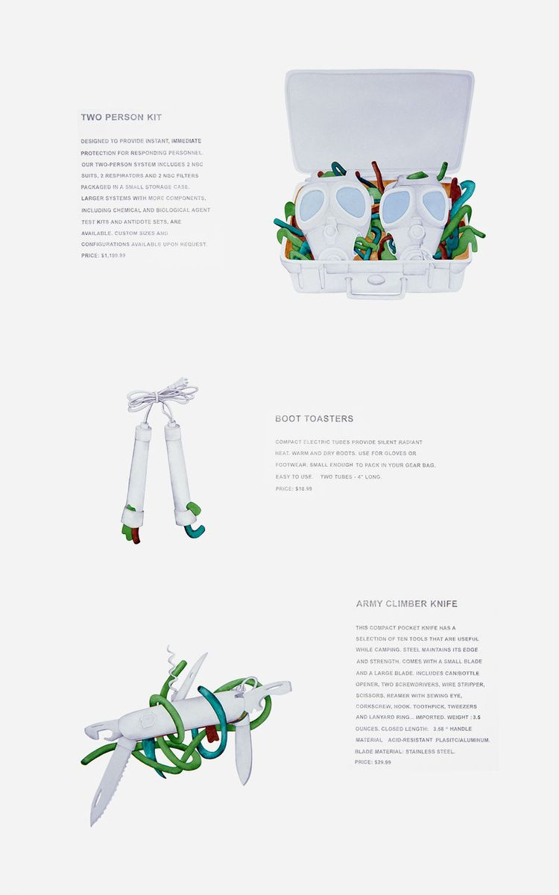
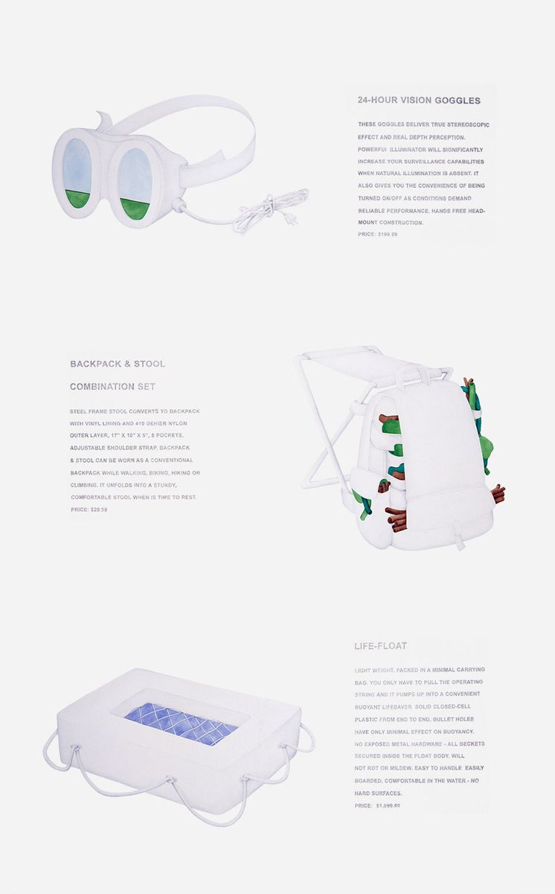
Press
- Bienal de Pontevedra 2004 – No princípio era a viagemcatalog, Pontevedra, Spain, 2004